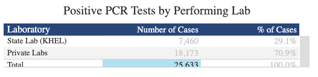
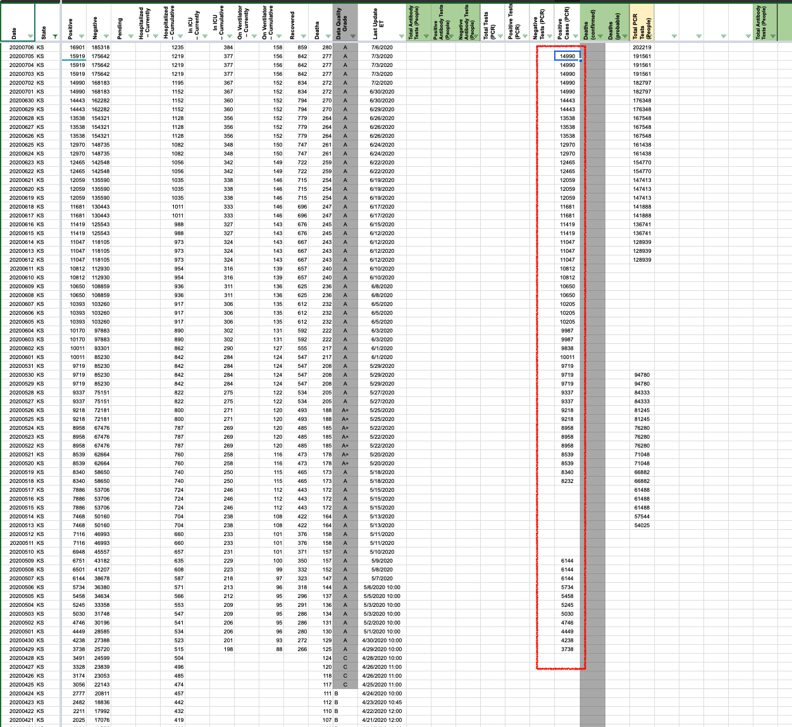
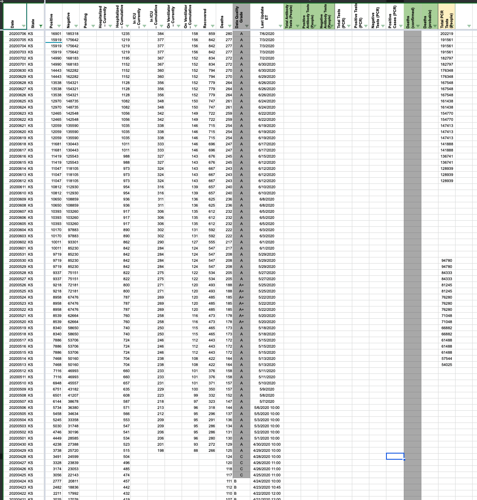
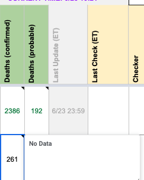
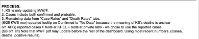
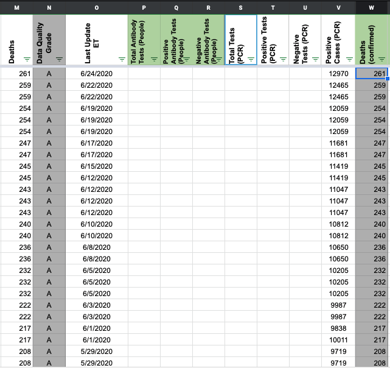
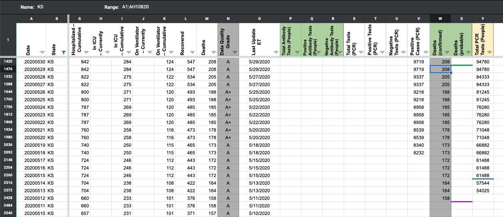
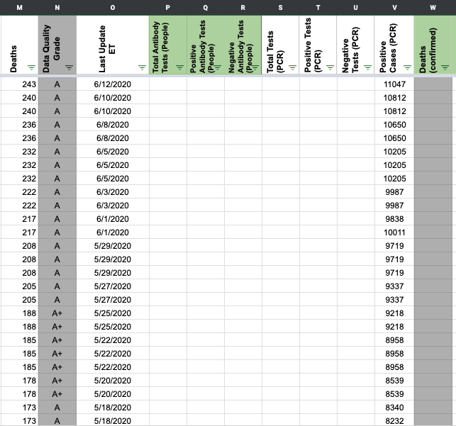

| Date | Number | Title |
|---|---|---|
| February 12, 2021, 8:34 PM PST | 1101 | [KS] Add antigen tests for 2/12 |
| February 12, 2021, 8:34 PM PST | 1101 | [KS] Add antigen tests for 2/12 |
| July 10, 2020, 8:23 AM PDT | 600 | [KS] PCL Cases Historicals ***Awaiting Outreach Results*** |
| July 6, 2020, 12:55 PM PDT | 581 | [KS]Data entry errors in Positive Cases PCR column - we actually don't have a source for it. so the full time series should be deleted. |
| June 24, 2020, 5:38 AM PDT | 516 | [KS] PCL Historicals and WS2 |
| April 24, 2020, 9:24 PM PDT | 292 | [States Daily CSV] KS deathIncrease is negative for 2020-04-24 |
#1101: [KS] Add antigen tests for 2/12
Issue number 1101
karaschechtman opened this issue on February 12, 2021, 8:34 PM PST
Labels Data quality
State or US: KS
Describe the problem KS added antigen tests to its dashboard on 2/12. Backfill today's value.
Link to data source https://www.coronavirus.kdheks.gov/160/COVID-19-in-Kansas Screenshot from today: https://covidtracking.com/screenshots/KS/KS-tertiary-20210212-173644.png (Day before did not have: https://covidtracking.com/screenshots/KS/KS-tertiary-20210211-173018.png)
Comments
#1101: [KS] Add antigen tests for 2/12
Issue number 1101
karaschechtman opened this issue on February 12, 2021, 8:34 PM PST
Labels Data quality
State or US: KS
Describe the problem KS added antigen tests to its dashboard on 2/12. Backfill today's value.
Link to data source https://www.coronavirus.kdheks.gov/160/COVID-19-in-Kansas Screenshot from today: https://covidtracking.com/screenshots/KS/KS-tertiary-20210212-173644.png (Day before did not have: https://covidtracking.com/screenshots/KS/KS-tertiary-20210211-173018.png)
Comments
#600: [KS] PCL Cases Historicals ***Awaiting Outreach Results***
Issue number 600
pscsharon opened this issue on July 10, 2020, 8:23 AM PDT
Labels Backfill Missing Data PCL/SVP Historicals
Need to finalize decision on whether we can or cannot use KS's historical case data for our Positive Cases (PCR) historicals. If yes, please backfill all days. We have not yet recorded any.
WS2:

States Daily:

KS Dashboard Comments: (Note that KS explicitly states they lump confirmed and probable in their case count.)


KS Dashboard showing historical numbers:

PRESS RELEASES: Strange. They just add the current day’s to the front and re-PDF the whole thing. This action leads me to think their historicals are not updated to be only confirmed… if they just keep adding today’s press release to prior days, but I am stretching - yes. https://www.coronavirus.kdheks.gov/DocumentCenter/View/1125/Historical---July-8?bidId=
Comments
The historical hover-over graph is most-likely a lumped figure, so we can't use it for backfill. We are waiting for confirmation from outreach.
The 'COVID-19 Summary' under 'Daily Case Summary & Historical Data' on the state page reports the number of positive tests, but these seem to be 'specimens,' rather than people. This is also inconclusive.
This problem is further complicated when considering that the 'Negative Tests' number is a lumped value (https://covid-tracking.slack.com/archives/C0124MP2E5C/p1592283152088300)
There is a separate number on the state page through the 'Testing Rates' button. In the 'Positive PCR Tests by Performing Lab' table, under 'Number of Cases,' we suspect that this number indicates lab-confirmed cases. We are waiting for confirmation from outreach on this and are working to take screenshots in order to have a record for potential back-filling.
***Note: On 7/27, this number and the 'Positive test' number in the historical PDF were the same.
We decided not to use the number from this graph as "Confirmed Cases": 
Reasons:
- This number equals a number they call “positive tests” on their summary PDFs
- KS lumps antibody and antigen in its negatives, and neg+pos for these figures = totals, so we know at least the totals are lumped. KS calls the positives “PCR tests” but they could be sneaking in antigens under the header of “PCR” like FL and AK do
- These confirmed/probable numbers will be impossible for days before we started screenshotting this page
- There is another potential source of confirmed figures from summing a timeseries, but the timeseries (1) doesn’t confirm that it’s confirmed cases, and (2) is by date diagnosed rather than date reported, so would be on a different timeline from our lumped figures making inferring probables impossible from it
#581: [KS]Data entry errors in Positive Cases PCR column - we actually don't have a source for it. so the full time series should be deleted.
Issue number 581
muamichali opened this issue on July 6, 2020, 12:55 PM PDT
Labels Data quality
State or US: KS
Describe the problem https://covid-tracking.slack.com/archives/CUQ4MMTPD/p1593895521467900?thread_ts=1593893959.453600&cid=CUQ4MMTPD https://covid-tracking.slack.com/archives/CUQ4MMTPD/p1594066085184900?thread_ts=1594064128.159200&cid=CUQ4MMTPD
Link to data source
Comments
That takes care of one item on my To Do list, which was listed as "KS PCR ARGH" and I was going to have to go back and figure out what that meant
BEFORE 
AFTER 
#516: [KS] PCL Historicals and WS2
Issue number 516
karaschechtman opened this issue on June 24, 2020, 5:38 AM PDT
Labels PCL/SVP Historicals
Death values are historically recorded in both the "Deaths" and "Deaths (Confirmed)" columns for KS. However, KS's death values are unclear about what they represent, so they should only be recorded in the main "Deaths" field.
Comments
Updated WS2 tooltips and left a private note  
Deleting KS values on States Daily in the confirmed field Before:  
After:


DC'ed by JJA 6/26 9:57:00 a.m. ET
#292: [States Daily CSV] KS deathIncrease is negative for 2020-04-24
Issue number 292
acobolew opened this issue on April 24, 2020, 9:24 PM PDT
[States Daily CSV] KS deathIncrease is negative for 2020-04-24
library(data.table) covidtracking.dt <- fread('https://covidtracking.com/api/v1/states/daily.csv') covidtracking.dt[, date := as.Date(as.character(date), '%Y%m%d')] covidtracking.dt[order(date, decreasing=FALSE)][ , .(date, state, death, deathIncrease) ][deathIncrease < 0] date state death deathIncrease 1: 2020-04-05 VA 51 -1 2: 2020-04-07 DC 22 -2 3: 2020-04-22 AR 42 -1 4: 2020-04-23 PA 1421 -201 5: 2020-04-24 KS 111 -1 6: 2020-04-24 TN 168 -2
Comments
Hi @acobolew Thanks for letting us know
This was the data reported by Kansas. Here are the screenshots documenting their reports
https://covidtracking.com/screenshots/KS/KS-20200423-181112.png
https://covidtracking.com/screenshots/KS/KS-20200424-180928.png
Changes (6).txt